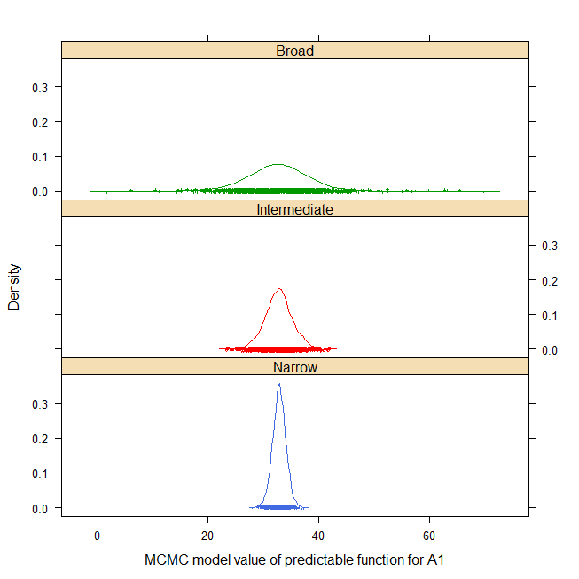

Split-plot experiment of simulated data
stroup.splitplot.RdA simulated dataset of a very simple split-plot experiment, used to illustrate the details of calculating predictable functions (broad space, narrow space, etc.).
For example, the density of narrow, intermediate and broad-space predictable function for factor level A1 is shown below (html help only) 
Format
ysimulated response
repreplicate, 4 levels
bsub-plot, 2 levels
awhole-plot, 3 levels
Used with permission of Walt Stroup.
Source
Walter W. Stroup, 1989. Predictable functions and prediction space in the mixed model procedure. Applications of Mixed Models in Agriculture and Related Disciplines.
References
Wolfinger, R.D. and Kass, R.E., 2000. Nonconjugate Bayesian analysis of variance component models, Biometrics, 56, 768--774. https://doi.org/10.1111/j.0006-341X.2000.00768.x
Examples
if (FALSE) {
library(agridat)
data(stroup.splitplot)
dat <- stroup.splitplot
# ---- lme4 ---
# libs(lme4)
# m0 <- lmer(y~ -1 + a + b + a:b + (1|rep) + (1|a:rep), data=dat)
# No predict function
# ----- nlme ---
# libs(nlme)
# m0 <- lme(y ~ -1 + a + b + a:b, data=dat, random = ~ 1|rep/a)
# ----- ASREML model ---
if(require("asreml", quietly=TRUE)){
libs(asreml,lucid)
m1 <- asreml(y~ -1 + a + b + a:b, random=~ rep + a:rep, data=dat)
# vc(m1) # Variance components match Stroup p. 41
## effect component std.error z.ratio bound
## rep 62.42 56.41 1.1 P
## a:rep 15.39 11.8 1.3 P
## units(R) 9.364 4.415 2.1 P
# Narrow space predictions
predict(m1, data=dat, classify="a", average=list(rep=NULL))
# a Predicted Std Err Status
# a1 32.88 1.082 Estimable
# a2 34.12 1.082 Estimable
# a3 25.75 1.082 Estimable
# Intermediate space predictions
predict(m1, data=dat, classify="a", ignore="a:rep",
average=list(rep=NULL))
# a Predicted Std Err Status
# a1 32.88 2.24 Estimable
# a2 34.12 2.24 Estimable
# a3 25.75 2.24 Estimable
# Broad space predictions
predict(m1, data=dat, classify="a")
# a Predicted Std Err Status
# a1 32.88 4.54 Estimable
# a2 34.12 4.54 Estimable
# a3 25.75 4.54 Estimable
}
# ----- MCMCglmm model -----
# Use the point estimates from REML with a prior distribution
libs(lattice,MCMCglmm)
prior2 = list(
G = list(G1=list(V=62.40, nu=1),
G2=list(V=15.38, nu=1)),
R = list(V = 9.4, nu=1)
)
m2 <- MCMCglmm(y~ -1 + a + b + a:b,
random=~ rep + a:rep, data=dat,
pr=TRUE, # save random effects as columns of 'Sol'
nitt=23000, # double the default 13000
prior=prior2, verbose=FALSE)
# posterior.mode(m2$VCV)
# rep a:rep units
# 39.766020 9.617522 7.409334
# plot(m2$VCV)
# Now create a matrix of coefficients for the prediction.
# Each column is for a different prediction. For example,
# the values in the column called 'a1a2n' are multiplied times
# the model coefficients (identified at the right side) to create
# the linear contrast for the the narrow-space predictions
# (also called adjusted mean) for the a1:a2 interaction.
# a1n a1i a1b a1a2n a1a2ib
cm <- matrix(c(1, 1, 1, 1, 1, # a1
0, 0, 0, -1, -1, # a2
0, 0, 0, 0, 0, # a3
1/2, 1/2, 1/2, 0, 0, # b2
0, 0, 0, -1/2, -1/2, # a2:b2
0, 0, 0, 0, 0, # a3:b2
1/4, 1/4, 0, 0, 0, # r1
1/4, 1/4, 0, 0, 0, # r2
1/4, 1/4, 0, 0, 0, # r3
1/4, 1/4, 0, 0, 0, # r4
1/4, 0, 0, 1/4, 0, # a1r1
0, 0, 0, -1/4, 0, # a2r1
0, 0, 0, 0, 0, # a3r1
1/4, 0, 0, 1/4, 0, # a1r2
0, 0, 0, -1/4, 0, # a2r2
0, 0, 0, 0, 0, # a3r2
1/4, 0, 0, 1/4, 0, # a1r3
0, 0, 0, -1/4, 0, # a2r3
0, 0, 0, 0, 0, # a3r3
1/4, 0, 0, 1/4, 0, # a1r4
0, 0, 0, -1/4, 0, # a2r4
0, 0, 0, 0, 0), # a3r4
ncol=5, byrow=TRUE)
rownames(cm) <- c("a1", "a2", "a3", "b2", "a2:b2", "a3:b2",
"r1", "r2", "r3", "r4",
"a1r1", "a1r2", "a1r3", "a1r4", "a2r1", "a2r2",
"a2r3", "a2r4", "a3r1", "a3r2", "a3r3", "a3r4")
colnames(cm) <- c("A1n","A1i","A1b", "A1-A2n", "A1-A2ib")
print(cm)
# post2 <- as.mcmc(m2$Sol
post2 <- as.mcmc(crossprod(t(m2$Sol), cm))
# Following table has columns for A1 estimate (narrow, intermediate, broad)
# A1-A2 estimate (narrow and intermediat/broad).
# The REML estimates are from Stroup 1989.
est <- rbind("REML est"=c(32.88, 32.88, 32.88, -1.25, -1.25),
"REML stderr"=c(1.08, 2.24, 4.54, 1.53, 3.17),
"MCMC mode"=posterior.mode(post2),
"MCMC stderr"=apply(post2, 2, sd))
round(est,2)
# A1n A1i A1b A1-A2n A1-A2ib
# REML est 32.88 32.88 32.88 -1.25 -1.25
# REML stderr 1.08 2.24 4.54 1.53 3.17
# MCMC mode 32.95 32.38 31.96 -1.07 -1.17
# MCMC stderr 1.23 2.64 5.93 1.72 3.73
# plot(post2)
post22 <- lattice::make.groups(
Narrow=post2[,1], Intermediate=post2[,2], Broad=post2[,3])
print(densityplot(~data|which, data=post22, groups=which,
cex=.25, lty=1, layout=c(1,3),
main="stroup.splitplot",
xlab="MCMC model value of predictable function for A1"))
}